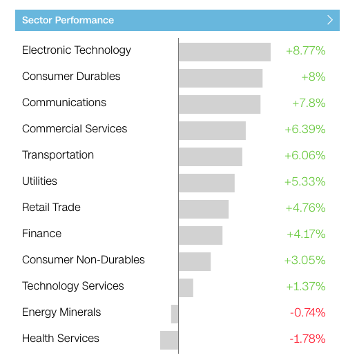
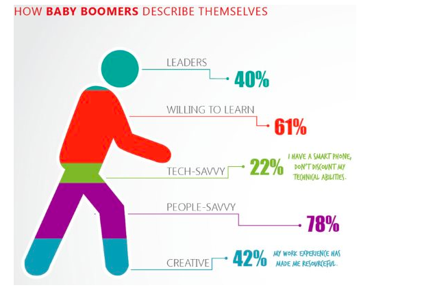

This is a good visualization.

Picture from: https://money.cnn.com/data/markets/
In terms of what Cairo lays out as five qualities of great visualizations, this one meets them all or is at least passable.
The visualization is
- Truthful. It is not false or misleading.
- Functional. The visualization is simple and straightforward and accurately expresses what it is trying to show.
- Beautiful. Ok, this one's a bit of a stretch. But it isn't difficult to look at and its colors are nice and soft.
- Insightful. By pointing out which stocks are improving and by how much, the graph helps us out tremendously, since it would difficult to tell otherwise.
- Enlightening. Another category where the graph is only meh. I don't think knowing which sectors performed well today will drastically change our lives, but by looking at the graph we certainly get the point in a concise and simple way.
This is a bad visualization.

Picture from: http://livingqlikview.com/the-9-worst-data-visualizations-ever-created/
In terms of what Cairo lays out as five qualities of great visualizations, this one fails all the criteria.
The visualization is not
- Truthful. The research appears to be of lesser quality, as the percentages do not add up to 100.
- Functional. The visualization is not easy to understand, and doesn't even make sense if you do comprehend it.
- Beautiful. Maybe, but probably not. I guess it's up to interpretation.
- Insightful. Again, not very clear and doesn't make sense.
- Enlightening. Because of it's failure to depict insightful data in a nice, clear way, the visualization fails to make an impression.
Ways it could be improved include fixing the poor research job done on the data, laying out the data in a different shape than a walking person, and having corresponding widths in color according to percentage values.